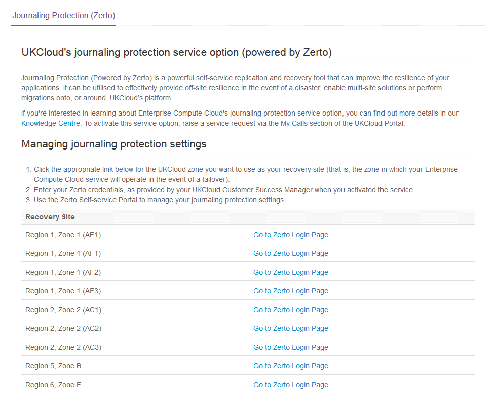
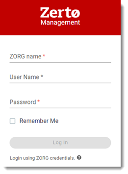
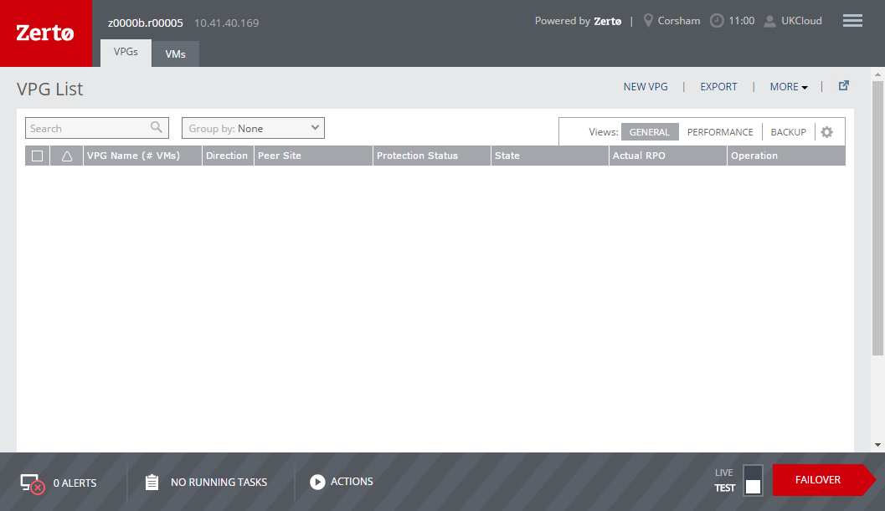

How to access the Zerto Self-Service Portal
Overview
UKCloud uses Zerto to power the following services:
Disaster Recovery to the Cloud
Journaling Protection for UKCloud for VMware
Workload Migration from a local, on-premises environment to the UKCloud platform
The Zerto Self-Service Portal (ZSSP) provides access to all the tools you need to:
Create and manage virtual protection groups (VPGs) for Journaling Protection
Perform test and live failovers
Move VPGs to migrate workloads from your local environment to the UKCloud platform
Intended audience
To complete the steps in this guide you must have log in details for the appropriate ZSSP.
Which Zerto Self-Service Portal should I use?
The ZSSP you use depends on what you are trying to do:
To create a VPG for Journaling Protection, use the ZSSP in the zone where the VMs you are protecting are located
Note
To create a VPG for Disaster Recovery to the Cloud or Workload Migration, use the Zerto Virtual Manager (ZVM) Web Client in your local environment.
To perform a test or live failover for Disaster Recovery to the Cloud, Journaling Protection or Workload Migration, use the ZSSP in the zone where your target VDC (for recovery or migration) is located
To move a VPG for Workload Migration, use the ZSSP in the UKCloud zone where your target VDC is located
Accessing the Zerto Self-Service Portal
If you want to create a VPG for Journaling Protection, run a test or live failover, or move a VPG, access the ZSSP in the appropriate UKCloud zone.
Note
If you want to create a VPG for Disaster Recovery to the Cloud or Workload Migration, use the ZVM Web Client in your local environment.
Log in to the UKCloud Portal.
For detailed instructions, see the Getting Started Guide for the UKCloud Portal.
In the navigation panel, expand TOOLS and then select Journaling Protection (Zerto).

On the Journaling Protection (Zerto) page, click the Go to Zerto Login Page link for the appropriate UKCloud zone (for more information, see Which Zerto Self-Service Portal should I use?).

Enter your log in credentials, including your ZORG name.

Note
These credentials are different from the ones you use to log in to the UKCloud Portal. If you're not sure what they are, raise a service request through My Calls.
After you log in, you'll see the main ZSSP page.

Next steps
After you have logged in to the ZSSP, you can:
Create and manage VPGs to identify the VMs that you want to protect (see How to create a virtual protection group)
Perform a test failover to verify that your VMs will be recovered correctly in the event of a disaster (see How to perform a failover)
Perform a live failover to recover after a disaster or migrate workloads (see How to perform a failover)
Move a VPG to migrate workloads (see How to migrate your workloads to the UKCloud platform)
Feedback
If you have any comments on this document or any other aspect of your UKCloud experience, send them to products@ukcloud.com.